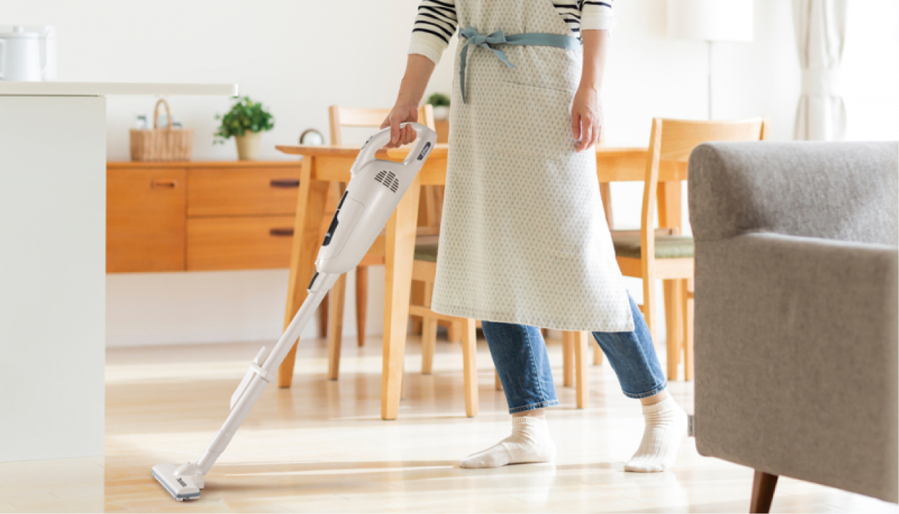
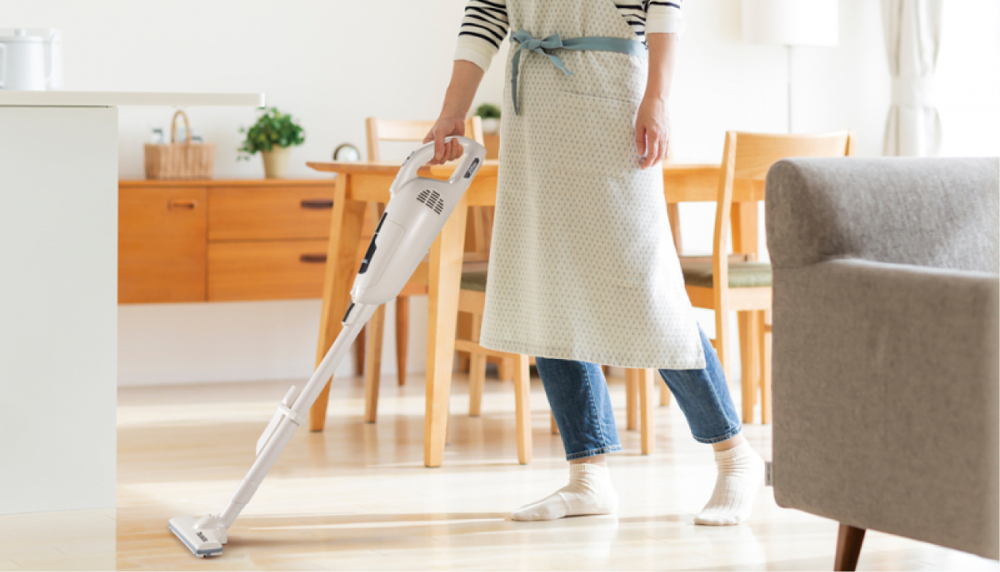

Уборка
пола
пола
 

Основные правила:
Правило №1
Паровая швабра
Правило №2
Натуральные средства
Важно!
*Экологичная уборка может уменьшить загрязнение окружающей среды,
а также улучшить качество воздуха в помещении.
Лайфхаки для экологичной уборки пола.
Когда дело доходит до уборки, мы обычно не думаем
о том, как воздействуем на окружающую среду. Однако,
существует ряд способов, как сделать свой процесс уборки пола
более экологически чистым и уменьшить воздействие
на окружающую среду. В этой статье мы поделимся
с вами пятью лайфхаками для экологически чистой уборки
пола.
Используйте натуральные очистители
Многие часто встречающиеся средства для мытья пола оказывают
вредное воздействие на окружающую среду. Вместо них используйте
натуральные очистители, такие как уксус или лимонный сок,
которые эффективно удаляют грязь и не наносят вреда
окружающей среде.
Используйте паровую швабру
Паровая швабра - это прекрасный способ легко избавиться от
загрязнений. Она использует горячий пар для очищения
и дезинфекции пола, удаления даже самых устойчивых пятен
и бактерий. Вам не придется использовать другие средства,
а также вы сократите использование воды, что в свою
очередь связано с экономией ресурсов.
МЫ В СОЦ СЕТЯХ